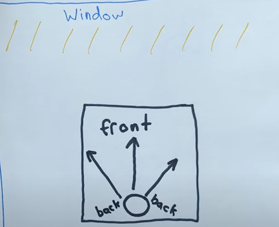
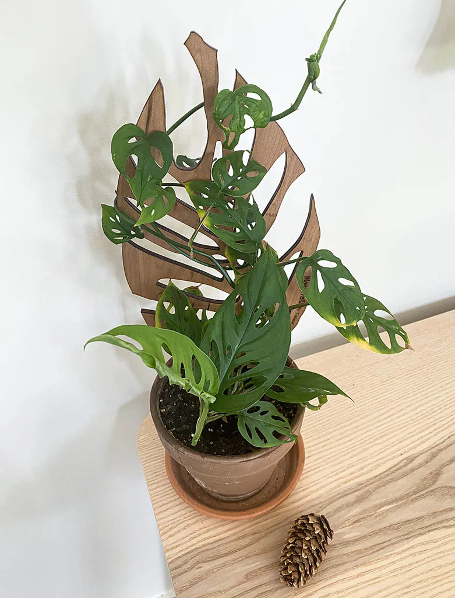

Monstera
Where should it be?
Indoors, ideally with a temperature between 15C and 28C
Prefers bright indirect light, rather than direct sun. The more bright inirect light it gets, the more holes will form in the leaves
Ideally, it will face the main light source, as in the diagram below. Front being the side th leaves come out, and back being the root and support side

Watering
In general water when the soil is dry, or the leaves are drooping
This will be roughly once every one to 2 weeks in summer, and once every three weeks in winter.
When watering, give it enough water so it comes out the bottom of the pot into the drip tray. Then empty the excess water rather than leave it to grow
Pruning
Prune leaves that are brown, yellow, leggy or droopy. This will also engourage new growth
Aeriel roots can be cut off if you don't like the look of them
https://www.youtube.com/watch?v=Sn9n9W9Gdz4
Propagation
https://youtu.be/0CvjNNCv5_s?t=160 shows how to take a cutting
https://www.youtube.com/watch?v=tYQfZtD1Csc shows how to set up a new plant from a cutting correctly, including identify the front and back of the plant and adding support
This video on potting soils for Monstera has information on soil blends for propagation. Perlite can be bought at Jumbo, Galaxus
Styling
In order to control the shape of the monstera, and have it grow attractively, a trellis or ladder is better than stakes or a column as it gives more control.
Monstera shaped trellis is a cool idea ( although maybe needs a multileaf trellis to really work

Troubleshooting
Yellowing leaves - likely due to overwatering. Make sure not watering too often, or sitting in water as they don't like wet feet
Browning leaves - lack of humidity in environment - Use a diffuser, use a pebble try, group plants together, or mist the monstera